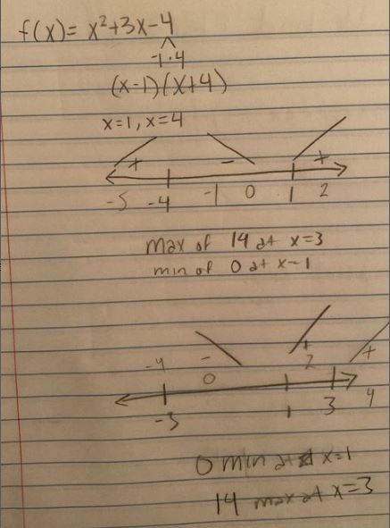
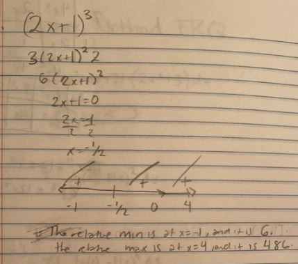
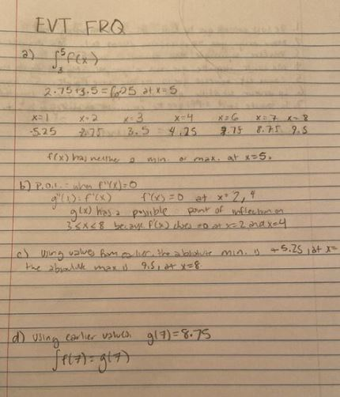

Extreme Value Theorem
| Limits with Algebraic Manipulation | Chain Rule | Extreme Value Theorem | Right Riemann Sums | Antiderivatives | Volumes of solids (Washer Method) | Back to Home Page |
Made by: Kara Ho and Akshita Ramesh, AP Calculus Block 5, Mrs. Burns' Class
Welcome to your third mission: Extreme Value Theorem! Here's a brief overview of what you'll need to do to complete your mission:
The extreme value theorem states that if a function is continuous on a closed interval [a,b], then the function
must have a minimum and maximum on that interval. The extreme value theorem is a utilization of critical points*
and is also used to find discontinuities on a graph.
*a critical point is where the derivative, f’(x), equals 0.
Let's try some practice problems!
1. Solve for f(x) = x² + 3x − 4 on [−3, 3]
2. Solve for f(x) = (2x + 1)³ on [−1, 4]
To see how the questions are solved, see the procedures below!
|  |  |
Lets try a multiple choice question on your own this time. You've got this! You can check your answer by clicking on the picture to the right.
|
|
|
Now lets try a free-response question! To check your answers, click the picture on the right

|  |